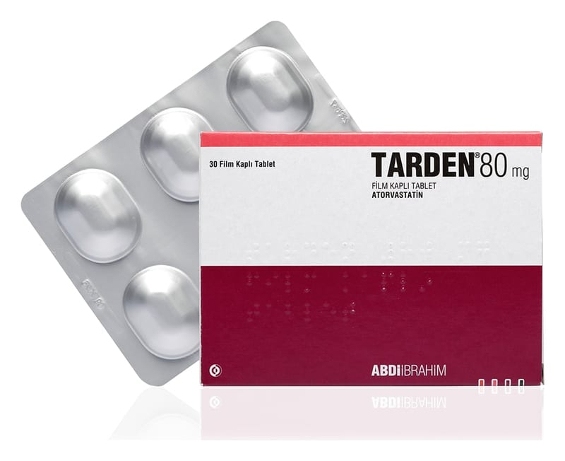

Tarden 80 mg Film Kaplı Tablet, 30 Adet

Ne için kullanılır
KT · Bölüm 1Her bir film kaplı tablet, 80 mg atorvastatine eşdeğer atorvastatin kalsiyum trihidrat ve boyar madde olarak titanyum dioksit içeren 30 ve 90 tabletlik blister ambalajlarda kullanıma sunulmuştur.
TARDEN bir yüzünde ‘80’ yazılı, oval, beyaz film kaplı tablettir.
TARDEN statinler olarak da bilinen lipid (yağ) düzenleyiciler isimli ilaç grubuna aittir.
Kolesterol ve trigliserid olarak bilinen yağ kökenli maddelerin düşürülmesinde kullanılır. Normal büyüme süreci için gerekli olan kolesterol doğal olarak oluşan bir maddedir. Ancak kandaki kolesterol çok arttığında, kan damarlarının duvarlarında depolanarak damarların daralmasına ve sonuçta tıkanmasına yol açabilir. Bu da kalp hastalığının en yaygın sebeplerinden biridir. Yüksek kolesterol seviyelerinin kalp hastalığı riskini arttırdığı kabul edilmektedir.
TARDEN, tek başına az yağlı diyet veya yaşam stil değişiklikleri başarısız olduğunda kandaki kolesterol ve trigliseridler olarak bilinen lipidleri düşürmek için kullanılır. Kolesterol seviyeleriniz normal olmasına rağmen; eğer kalp hastalığı için artmış riskiniz varsa, TARDEN bu riskin azaltılması için de kullanılabilir. Tedavi sırasında standart kolesterol düşürücü diyete devam etmelisiniz.